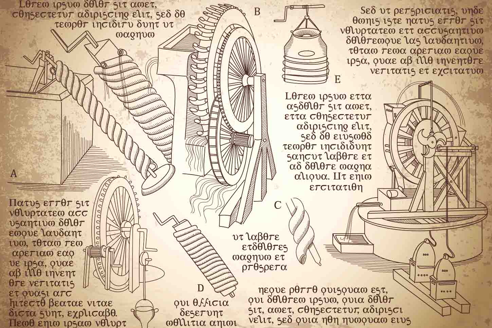
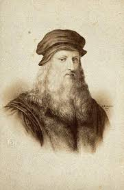
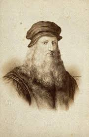

Infancia
Leonardo nació en 1452 en la villa toscana de Vinci, hijo de una campesina y un notario, que tendría 11 hijos
(todos varones) en total. Su insaciable curiosidad se manifestó de niño: ya dibujaba animales mitológicos,
híbridos entre realidad y fantasía. 1ª leyenda: Su padre entró en casa y se asustó al ver una medusa con serpientes
en la cabeza. Era un dibujo.
Leonardo perfeccionó en el taller de Verrocchio pintura, escultura y demás artes. No tardó en superar a su maestro.
Pronto se interesó en una nueva técnica llegada de los Países Bajos: la pintura al óleo. Con ella innovó en composición
y claroscuro.

Acontecimientos importantes
Se traslada de corte en corte: a la Florencia de los Médicis, al Milán de Ludovico Sforza… No sólo como
artista. También como ingeniero militar (Italia estaba en continua guerra entre sus múltiples mini-estados),
urbanista, músico y luthier.
Durante años desarrolló increíbles tratados científicos y futuristas ingenios: el submarino,
misiles, escafandras, helicópteros…
A los 24 años es acusado de «sodomía». Leonardo era homosexual, y aunque en la época era
bastante habitual, quedaría marcado socialmente. Aún así, en el cinquecento ya era uno de los
mayores maestros de Italia. Arte y ciencia eran su mundo.
No dejó nada sin experimentar… Hasta la cocina. Hablando de esto, hay que decir que el artista
era estrictamente vegetariano. Incluso llegó a llamar a los omnívoros «devoradores de cadáveres».
Y hablando de esto también, Leo robaba cadáveres para diseccionar.
Pasó sus últimos años en Roma y finalmente en el palacio de Cloux, como «primer pintor,
arquitecto y mecánico del rey». Su brazo derecho quedó paralizado, pero tenía una mano
izquierda igual de hábil. De hecho se sabe que pese a su dislexia, podía escribir con una
mano hacia adelante, y con la otra hacia atrás.
El genio no dejaría de trabajar en toda disciplina conocida y por conocer hasta el mismo día
de su muerte y hoy es considerado uno de los artistas más grandes de la historia del arte.
 
